선형회귀는 지도학습의 가장 단순하고 기본적인 접근법 가운데 하나이다.
선형회귀는 \(Y\) 가 \(X_1,X_2,\ldots,X_p\) 에 의존하는 관계가 선형이라고 가정한다.
실제 회귀함수가 완벽하게 선형인 경우는 거의 없다.
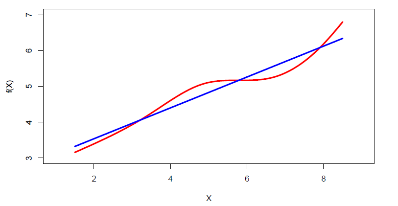
지나치게 단순해 보일 수 있지만 선형회귀는 개념적으로도 실용적으로도 매우 유용하다.
광고 자료를 생각해 보자.
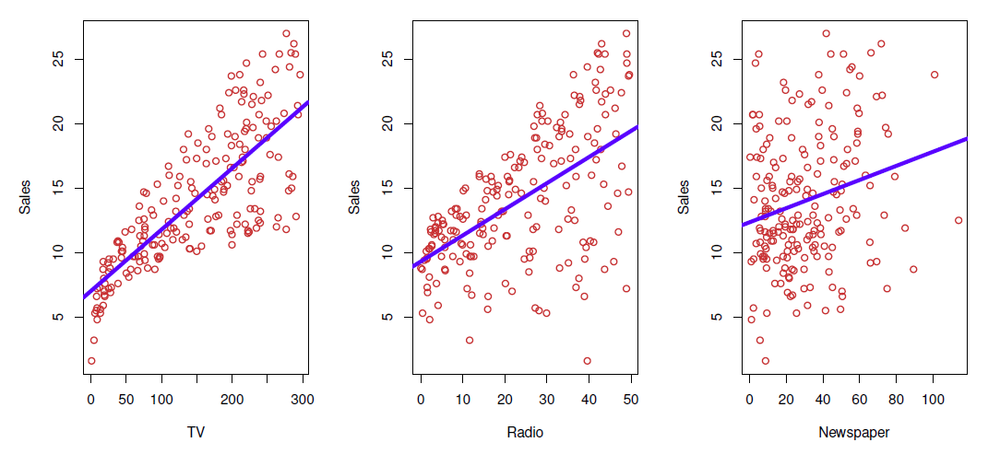
다음과 같은 질문을 할 수 있다.
광고비와 매출 사이에 관계가 있는가?
그 관계는 얼마나 강한가?
어떤 광고매체가 매출에 기여하는가?
미래 매출을 얼마나 정확하게 예측할 수 있는가?
관계는 선형인가?
광고매체 사이에 시너지 효과가 있는가?
단순선형회귀
단순선형회귀모형은 다음과 같이 정의한다.
\[
Y=\beta_0+\beta_1X+\epsilon.
\]
여기서 \(Y\) 와 \(X\) 는 관측변수, \(\beta_0\) 와 \(\beta_1\) 은 각각 절편 과 기울기 라고 부르는 모수이며, \(\epsilon\) 은 관측되지 않는 확률오차항이다.
모수 \(\beta_0\) 와 \(\beta_1\) 은 알려지지 않은 상수이므로 훈련 자료에서 추정한다.
모형계수의 추정값 \(\hat\beta_0\) 와 \(\hat\beta_1\) 이 주어지면 \(X=x\) 에서 \(Y\) 를 다음과 같이 예측한다.
\[
\hat y=\hat\beta_0+\hat\beta_1x.
\]
모자 기호(hat)는 추정값 또는 예측값을 뜻한다.
회귀계수의 추정
\(X\) 의 \(i\) 번째 관측값을 이용한 \(Y\) 의 예측값을 \(\hat y_i=\hat\beta_0+\hat\beta_1x_i\) 라고 하자.\(e_i=y_i-\hat y_i\) 는 \(i\) 번째 잔차(residual) 이다.잔차제곱합(residual sum of squares, RSS) 은 다음과 같다.
\[
RSS=e_1^2+e_2^2+\cdots+e_n^2
\]
또는
\[
RSS=\sum_{i=1}^{n}(y_i-\hat\beta_0-\hat\beta_1x_i)^2.
\]
최소제곱법은 RSS가 최소가 되도록 \(\hat\beta_0\) 와 \(\hat\beta_1\) 을 선택한다.
훈련 자료 \((x_1,y_1),\ldots,(x_n,y_n)\) 에서 보통최소제곱법(OLS)은 다음 최적화 문제를 푼다.
\[
(\hat\beta_0,\hat\beta_1)
=\underset{\beta_0,\beta_1}{\arg\min}
\sum_{i=1}^{n}\{y_i-(\beta_0+\beta_1x_i)\}^2.
\]
\[
\hat\beta_1=
\frac{\sum_{i=1}^{n}(x_i-\bar x)(y_i-\bar y)}
{\sum_{i=1}^{n}(x_i-\bar x)^2},
\]
\[
\hat\beta_0=\bar y-\hat\beta_1\bar x,
\]
여기서 \(\bar x=n^{-1}\sum_{i=1}^{n}x_i\) 와 \(\bar y=n^{-1}\sum_{i=1}^{n}y_i\) 는 각각 \(x\) 와 \(y\) 의 표본평균이다.
참고 1
성공적인 추정을 위해 중요한 가정은 다음과 같다.
\[
E(\epsilon\mid X=x)=0.
\]
이 가정은 설명변수 \(X\) 와 오차항 \(\epsilon\) 사이에 체계적인 관련성이 없음을 의미한다.
예제 1: 광고 자료
광고 자료에서 TV 광고비를 이용하여 매출을 회귀분석한다.
<- read.csv ("data/Advertising.csv" )summary (adv)
#> X TV radio newspaper
#> Min. : 1.00 Min. : 0.70 Min. : 0.000 Min. : 0.30
#> 1st Qu.: 50.75 1st Qu.: 74.38 1st Qu.: 9.975 1st Qu.: 12.75
#> Median :100.50 Median :149.75 Median :22.900 Median : 25.75
#> Mean :100.50 Mean :147.04 Mean :23.264 Mean : 30.55
#> 3rd Qu.:150.25 3rd Qu.:218.82 3rd Qu.:36.525 3rd Qu.: 45.10
#> Max. :200.00 Max. :296.40 Max. :49.600 Max. :114.00
#> sales
#> Min. : 1.60
#> 1st Qu.:10.38
#> Median :12.90
#> Mean :14.02
#> 3rd Qu.:17.40
#> Max. :27.00
<- lm (sales ~ TV, data = adv)summary (fit)
#>
#> Call:
#> lm(formula = sales ~ TV, data = adv)
#>
#> Residuals:
#> Min 1Q Median 3Q Max
#> -8.3860 -1.9545 -0.1913 2.0671 7.2124
#>
#> Coefficients:
#> Estimate Std. Error t value Pr(>|t|)
#> (Intercept) 7.032594 0.457843 15.36 <2e-16 ***
#> TV 0.047537 0.002691 17.67 <2e-16 ***
#> ---
#> Signif. codes: 0 '***' 0.001 '**' 0.01 '*' 0.05 '.' 0.1 ' ' 1
#>
#> Residual standard error: 3.259 on 198 degrees of freedom
#> Multiple R-squared: 0.6119, Adjusted R-squared: 0.6099
#> F-statistic: 312.1 on 1 and 198 DF, p-value: < 2.2e-16
plot (x = adv$ TV, y = adv$ sales, pch = 20 ,xlab = "TV 광고비(천 달러)" ,ylab = "매출(천 단위)" , col = "steel blue" )abline (fit, col = "dark gray" , lwd = 3 )segments (x0 = adv$ TV, y0 = predict (fit),x1 = adv$ TV, y1 = adv$ sales, col = "light gray" )
그림은 매출을 TV 광고비에 회귀한 최소제곱 적합을 보여준다.
선형모형은 전체적인 관계를 잘 포착하지만 그래프 왼쪽 일부에서는 적합이 다소 부족하다.
회귀선으로부터의 차이 \(e_i=y_i-\hat y_i\) 를 잔차라고 하며, 관측되지 않은 오차 \(\epsilon_i\) 의 추정값으로 해석한다.
관측값은 \(y_i=\hat y_i+e_i\) 로 분해할 수 있다.
다른 표본을 추출하면 \(\hat\beta_0\) 와 \(\hat\beta_1\) 의 값도 달라지므로 추정량은 확률변수이다.
모집단에서 크기 \(n\) 의 표본을 반복해서 추출하고 매번 추정값을 계산할 때 나타나는 추정값의 분포를 표본분포(sampling distribution) 라고 한다.
예제 2: 추정량의 표본분포
왼쪽 패널은 \(n=100\) 인 한 표본의 산점도, 모집단 회귀선 및 OLS 회귀선을 보여준다.
가운데 패널은 크기 100인 서로 다른 10개 표본에서 얻은 OLS 회귀선을 보여준다.
오른쪽 패널은 크기 100인 1,000개 표본에서 얻은 기울기 추정값 \(\hat\beta_1\) 의 히스토그램이다.
모집단 모형은 다음과 같다.
\[
y=2+3x+\epsilon,
\]
즉 \(\beta_0=2\) , \(\beta_1=3\) 이다. 이 모의실험에서 \(x\sim N(0,1)\) 이고 \(\epsilon\sim N(0,4)\) 이다.
set.seed (321 )<- rnorm (n = 100 , mean = 0 , sd = 1 )<- rnorm (n = 100 , mean = 0 , sd = 4 )<- 2 ; beta1 <- 3 <- beta0 + beta1 * x + epshead (cbind (x, y))
#> x y
#> [1,] 1.7049032 1.900747
#> [2,] -0.7120386 -3.810928
#> [3,] -0.2779849 5.699243
#> [4,] -0.1196490 4.912434
#> [5,] -0.1239606 -3.068909
#> [6,] 0.2681838 2.450691
<- lm (y ~ x)summary (fit_sim)
#>
#> Call:
#> lm(formula = y ~ x)
#>
#> Residuals:
#> Min 1Q Median 3Q Max
#> -11.0051 -2.0868 -0.1227 2.4214 8.3195
#>
#> Coefficients:
#> Estimate Std. Error t value Pr(>|t|)
#> (Intercept) 1.9905 0.3663 5.434 4.03e-07 ***
#> x 3.3588 0.3852 8.720 7.22e-14 ***
#> ---
#> Signif. codes: 0 '***' 0.001 '**' 0.01 '*' 0.05 '.' 0.1 ' ' 1
#>
#> Residual standard error: 3.663 on 98 degrees of freedom
#> Multiple R-squared: 0.4369, Adjusted R-squared: 0.4311
#> F-statistic: 76.03 on 1 and 98 DF, p-value: 7.219e-14
par (mfrow = c (1 , 3 ))plot (x, y, col = "steel blue" , xlab = "x" , ylab = "y" ,main = "첫 번째 표본" , font.main = 1 )abline (a = 2 , b = 3 , col = "red" )abline (fit_sim, col = "blue" )legend ("topleft" , legend = c ("모집단" , "첫 표본" ),lty = 1 , col = c ("red" , "blue" ), bty = "n" )plot (x, y, type = "n" , main = "10개 표본의 회귀선" , font.main = 1 )for (i in 1 : 10 ) {<- rnorm (n = 100 , mean = 0 , sd = 1 )<- rnorm (n = 100 , mean = 0 , sd = 4 )<- beta0 + beta1 * x_i + eps_iabline (lm (y_i ~ x_i), col = "light blue" )abline (a = 2 , b = 3 , col = "red" )abline (fit_sim, col = "blue" )legend ("topleft" , legend = c ("모집단" , "첫 표본" , "10회 모의실험" ),lty = 1 , col = c ("red" , "blue" , "light blue" ), bty = "n" )<- 1000 <- numeric (nsim)for (i in 1 : nsim) {<- rnorm (n = 100 , mean = 0 , sd = 1 )<- rnorm (n = 100 , mean = 0 , sd = 4 )<- beta0 + beta1 * x_i + eps_i<- coef (lm (y_i ~ x_i))[2 ]hist (hat_beta1, xlab = expression (hat (beta)[1 ]),col = "light blue" , probability = TRUE ,main = expression ("1,000개의 " * hat (beta)[1 ] * " 추정값" ))curve (dnorm (x, mean = mean (hat_beta1), sd = sd (hat_beta1)),col = "red" , add = TRUE )
#>
#> Call:
#> lm(formula = y ~ x)
#>
#> Residuals:
#> Min 1Q Median 3Q Max
#> -11.0051 -2.0868 -0.1227 2.4214 8.3195
#>
#> Coefficients:
#> Estimate Std. Error t value Pr(>|t|)
#> (Intercept) 1.9905 0.3663 5.434 4.03e-07 ***
#> x 3.3588 0.3852 8.720 7.22e-14 ***
#> ---
#> Signif. codes: 0 '***' 0.001 '**' 0.01 '*' 0.05 '.' 0.1 ' ' 1
#>
#> Residual standard error: 3.663 on 98 degrees of freedom
#> Multiple R-squared: 0.4369, Adjusted R-squared: 0.4311
#> F-statistic: 76.03 on 1 and 98 DF, p-value: 7.219e-14
회귀계수의 정확도
일반적으로 \(X\) 와 \(Y\) 의 실제 관계는 \(Y=f(X)+\epsilon\) 이다.
단순선형회귀에서는 \(f(X)=\beta_0+\beta_1X\) 이므로 모집단 회귀식은 \(Y=\beta_0+\beta_1X+\epsilon\) 이다.
예제 2에서 보았듯이 \(\hat\beta_0\) 와 \(\hat\beta_1\) 은 모집단 모수 \(\beta_0\) 와 \(\beta_1\) 에서 어느 정도 벗어난다.
하지만 최소제곱 추정량은 적절한 가정 아래 평균적으로 실제 모수와 같다. 즉 \(E(\hat\beta_j)=\beta_j\) , \(j=0,1\) 이다.
이러한 추정량을 불편추정량(unbiased estimator) 이라고 한다.
추정의 정확도는 추정량의 표준오차(standard error) 로 평가한다.
\[
\widehat{SE}(\hat\beta_1)=
\frac{\hat\sigma}{\sqrt{\sum_{i=1}^{n}(x_i-\bar x)^2}},
\]
\[
\widehat{SE}(\hat\beta_0)=
\hat\sigma\left\{
\frac{1}{n}+\frac{\bar x^2}{\sum_{i=1}^{n}(x_i-\bar x)^2}
\right\}^{1/2},
\]
여기서 \(\sigma^2=\operatorname{Var}(\epsilon)\) 이다. 회귀분석 소프트웨어는 이러한 표준오차를 기본적으로 제공한다.
#>
#> Call:
#> lm(formula = y ~ x)
#>
#> Residuals:
#> Min 1Q Median 3Q Max
#> -11.0051 -2.0868 -0.1227 2.4214 8.3195
#>
#> Coefficients:
#> Estimate Std. Error t value Pr(>|t|)
#> (Intercept) 1.9905 0.3663 5.434 4.03e-07 ***
#> x 3.3588 0.3852 8.720 7.22e-14 ***
#> ---
#> Signif. codes: 0 '***' 0.001 '**' 0.01 '*' 0.05 '.' 0.1 ' ' 1
#>
#> Residual standard error: 3.663 on 98 degrees of freedom
#> Multiple R-squared: 0.4369, Adjusted R-squared: 0.4311
#> F-statistic: 76.03 on 1 and 98 DF, p-value: 7.219e-14
표준오차는 같은 크기의 표본을 반복해서 추출하고 각 표본에서 \(\hat\beta_1\) 을 계산했을 때 그 추정값들이 얼마나 변하는지를 추정한다.
예제의 1,000회 반복에서 계산한 \(\hat\beta_1\) 의 표준편차는 회귀출력의 표준오차와 비슷한 값을 가져야 한다.
신뢰구간
표준오차를 이용하여 회귀계수의 신뢰구간(confidence interval, CI) 을 계산할 수 있다.
\(100(1-\alpha)\%\) 신뢰구간은 반복표본을 추출하여 같은 절차로 구간을 만들 때 그 구간의 \(100(1-\alpha)\%\) 가 실제 모수를 포함하도록 구성된다.일반적인 형태는 다음과 같다.
\[
\hat\beta\pm c_{\alpha/2}\widehat{SE}(\hat\beta),
\]
여기서 \(c_{\alpha/2}\) 는 \(t\) 분포 또는 정규분포의 \(1-\alpha/2\) 분위수이다.
유의수준 \(\alpha\) 는 흔히 0.05 또는 0.01을 사용하며 각각 95%와 99% 신뢰수준에 해당한다.
표본크기가 충분히 클 때 95% 신뢰구간에서는 \(c_{0.025}\approx1.96\approx2\) 이다.
예제 2에서 \(\beta_1\) 의 95% 신뢰구간은 대략 다음과 같다.
\[
\hat\beta_1\pm2\widehat{SE}(\hat\beta_1).
\]
#> 2.5 % 97.5 %
#> (Intercept) 1.263579 2.717503
#> x 2.594394 4.123197
이 예제에서는 모집단 기울기 \(\beta_1=3\) 이 신뢰구간에 포함된다.
95% 신뢰구간은 반복해서 만든 구간의 약 5%가 실제 모집단 모수를 포함하지 않을 수 있음을 의미한다.
가설검정
표준오차는 가설검정에도 사용된다.
가장 일반적인 검정은 다음의 귀무가설과 대립가설을 비교한다.
\[
H_0:\text{$X$와 $Y$ 사이에 선형관계가 없다}
\]
\[
H_1:\text{$X$와 $Y$ 사이에 선형관계가 있다}.
\]
\[
H_0:\beta_1=0
\qquad\text{대}\qquad
H_1:\beta_1\neq0.
\]
\(H_0\) 가 참이면 \(Y=\beta_0+\epsilon\) 이므로 \(X\) 는 \(Y\) 와 선형적으로 관련되지 않는다.더 일반적으로 \(H_0:\beta_1=\beta_1^*\) 를 검정하는 통계량은 다음과 같다.
\[
t=\frac{\hat\beta_1-\beta_1^*}{\widehat{SE}(\hat\beta_1)}.
\]
\(H_0:\beta_1=0\) 에서는 다음으로 단순화된다.
\[
t=\frac{\hat\beta_1}{\widehat{SE}(\hat\beta_1)}.
\]
귀무가설이 참이고 정규오차 가정이 성립하면 이 통계량은 자유도 \(n-2\) 인 Student \(t\) 분포를 따른다.
표본크기가 충분히 크면 \(t\) 분포는 표준정규분포에 가까워진다.
\(|t|\) 가 충분히 크면 귀무가설을 기각한다.\(p\) 값은 귀무가설이 참일 때 관측한 통계량만큼 또는 그보다 더 극단적인 값을 얻을 확률이다.\(p\) 값이 미리 정한 유의수준보다 작으면 귀무가설을 기각한다. 흔히 사용하는 기준은 0.05와 0.01이다.
예제 3: 광고 자료의 유의성 및 적합도
광고 자료에서 TV 계수의 \(p\) 값은 매우 작다. 따라서 TV 광고가 매출에 영향을 미치지 않는다는 귀무가설을 강하게 기각할 수 있으며, 계수의 부호는 관계가 양의 방향임을 보여준다.
선형회귀의 적합도는 흔히 잔차표준오차(residual standard error, RSE) 와 결정계수 \(R^2\) 로 평가한다.
\[
RSE=\sqrt{\frac{RSS}{n-2}}
=\sqrt{\frac{1}{n-2}\sum_{i=1}^{n}(y_i-\hat y_i)^2},
\]
\[
R^2=\frac{TSS-RSS}{TSS}=1-\frac{RSS}{TSS},
\]
여기서 \(TSS=\sum_{i=1}^{n}(y_i-\bar y)^2\) 는 총제곱합이고 \(RSS=\sum_{i=1}^{n}(y_i-\hat y_i)^2\) 는 잔차제곱합이다.
단순선형회귀에서는 \(R^2=r^2\) 이며, \(r\) 은 \(X\) 와 \(Y\) 의 표본상관계수이다.
\[
r=\frac{\sum_{i=1}^{n}(x_i-\bar x)(y_i-\bar y)}
{\sqrt{\sum_{i=1}^{n}(x_i-\bar x)^2}\sqrt{\sum_{i=1}^{n}(y_i-\bar y)^2}}.
\]
\(R^2\) 은 \(0\leq R^2\leq1\) 인 적합도 지표이다. \(R^2=0\) 이면 모형이 반응변수의 변동을 설명하지 못하고, \(R^2=1\) 이면 완벽하게 적합된다.반대로 RSE는 적합되지 않은 오차의 전형적인 크기를 반응변수와 같은 단위로 나타낸다.
<- lm (sales ~ TV, data = adv)summary (fit)
#>
#> Call:
#> lm(formula = sales ~ TV, data = adv)
#>
#> Residuals:
#> Min 1Q Median 3Q Max
#> -8.3860 -1.9545 -0.1913 2.0671 7.2124
#>
#> Coefficients:
#> Estimate Std. Error t value Pr(>|t|)
#> (Intercept) 7.032594 0.457843 15.36 <2e-16 ***
#> TV 0.047537 0.002691 17.67 <2e-16 ***
#> ---
#> Signif. codes: 0 '***' 0.001 '**' 0.01 '*' 0.05 '.' 0.1 ' ' 1
#>
#> Residual standard error: 3.259 on 198 degrees of freedom
#> Multiple R-squared: 0.6119, Adjusted R-squared: 0.6099
#> F-statistic: 312.1 on 1 and 198 DF, p-value: < 2.2e-16
예를 들어 RSE가 3.26이라면 TV 광고비에 근거한 매출 예측이 실제 매출에서 전형적으로 약 3.26천 단위만큼 벗어난다고 해석할 수 있다.
평균 매출이 약 14천 단위라면 이 오차는 평균 매출의 약 23%에 해당한다.
다중선형회귀
설명변수를 여러 개 포함하면 다중선형회귀 가 된다.
\[
Y=\beta_0+\beta_1X_1+\cdots+\beta_pX_p+\epsilon,
\]
여기서 \(X_j\) 는 \(j\) 번째 예측변수이고 \(\beta_j\) 는 다른 변수를 고정했을 때 \(Y\) 와 \(X_j\) 사이의 조건부 또는 주변효과를 나타낸다.
\(\beta_j\) 는 다른 모든 예측변수를 고정했을 때 \(X_j\) 가 한 단위 증가함에 따라 \(Y\) 가 평균적으로 얼마나 변하는지를 의미한다.계수는 다음 잔차제곱합을 최소화하도록 추정한다.
\[
\sum_{i=1}^{n}(y_i-\hat y_i)^2,
\qquad
\hat y_i=\hat\beta_0+\hat\beta_1x_{i1}+\cdots+\hat\beta_px_{ip}.
\]
회귀계수의 해석
예측변수끼리 상관되지 않는 균형설계가 가장 이상적이다.
각 계수를 독립적으로 추정하고 검정하기 쉽다.
“다른 변수를 고정했을 때 \(X_j\) 의 한 단위 변화는 \(Y\) 의 \(\beta_j\) 만큼의 변화와 관련된다”는 해석이 명확하다.
예측변수 사이의 상관은 여러 문제를 일으킨다.
계수 추정량의 분산이 증가하며 때로는 매우 크게 증가한다.
실제로 \(X_j\) 가 변할 때 다른 변수도 함께 변할 수 있으므로 계수의 조건부 해석이 어려워진다.
관찰자료에서는 회귀계수만을 근거로 인과관계를 주장해서는 안 된다.
Mosteller와 Tukey의 예를 생각해 보자.
주머니 속 동전의 총액을 \(Y\) , 전체 동전 수를 \(X_1\) , 1센트·5센트·10센트 동전 수를 \(X_2\) 라고 하자. \(X_2\) 만 사용하면 계수는 양수일 것이지만 \(X_1\) 을 함께 포함하면 해석이 달라질 수 있다.
한 미식축구 선수의 시즌 태클 수를 \(Y\) , 체중과 키를 \(W,H\) 라고 하자. 적합식이 \(\hat Y=b_0+0.50W-0.10H\) 일 때 키의 음의 계수는 체중이 같은 선수를 비교한다는 조건부 해석을 가져야 한다.
“본질적으로 모든 모형은 틀렸지만, 그중 일부는 유용하다.” — George Box
“복잡한 시스템에 충격을 주었을 때 어떤 일이 일어나는지 알아내는 유일한 방법은 그 시스템을 수동적으로 관찰하는 데 그치지 않고 실제로 변화시켜 보는 것이다.” — Mosteller와 Tukey가 George Box의 견해를 바꾸어 표현
다중회귀의 추정과 예측
추정값 \(\hat\beta_0,\hat\beta_1,\ldots,\hat\beta_p\) 가 주어지면 다음 식으로 예측한다.
\[
\hat y=\hat\beta_0+\hat\beta_1x_1+\cdots+\hat\beta_px_p.
\]
\[
\begin{aligned}
RSS
&=\sum_{i=1}^{n}(y_i-\hat y_i)^2\\
&=\sum_{i=1}^{n}
(y_i-\hat\beta_0-\hat\beta_1x_{i1}-\cdots-\hat\beta_px_{ip})^2.
\end{aligned}
\]
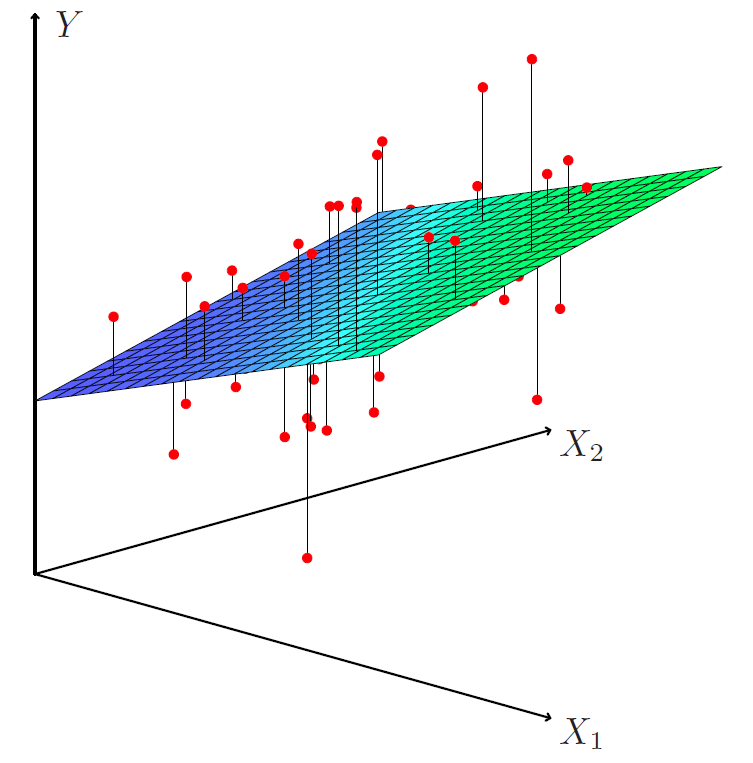
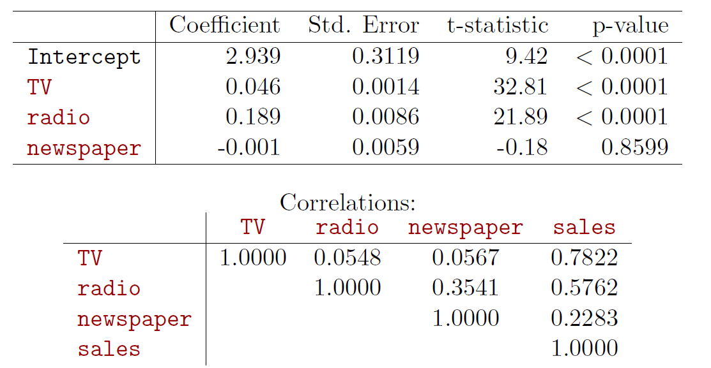
예제 4: 광고매체의 다중회귀
다음 모형을 적합한다.
\[
sales=\beta_0+\beta_1TV+\beta_2radio+\beta_3newspaper+\epsilon.
\]
#> X TV radio newspaper
#> Min. : 1.00 Min. : 0.70 Min. : 0.000 Min. : 0.30
#> 1st Qu.: 50.75 1st Qu.: 74.38 1st Qu.: 9.975 1st Qu.: 12.75
#> Median :100.50 Median :149.75 Median :22.900 Median : 25.75
#> Mean :100.50 Mean :147.04 Mean :23.264 Mean : 30.55
#> 3rd Qu.:150.25 3rd Qu.:218.82 3rd Qu.:36.525 3rd Qu.: 45.10
#> Max. :200.00 Max. :296.40 Max. :49.600 Max. :114.00
#> sales
#> Min. : 1.60
#> 1st Qu.:10.38
#> Median :12.90
#> Mean :14.02
#> 3rd Qu.:17.40
#> Max. :27.00
cor (adv[, c ("TV" , "radio" , "newspaper" , "sales" )])
#> TV radio newspaper sales
#> TV 1.00000000 0.05480866 0.05664787 0.7822244
#> radio 0.05480866 1.00000000 0.35410375 0.5762226
#> newspaper 0.05664787 0.35410375 1.00000000 0.2282990
#> sales 0.78222442 0.57622257 0.22829903 1.0000000
pairs (adv[, c ("TV" , "radio" , "newspaper" , "sales" )],cex = 0.5 , col = "red" )
<- lm (sales ~ TV + radio + newspaper, data = adv)summary (fit1)
#>
#> Call:
#> lm(formula = sales ~ TV + radio + newspaper, data = adv)
#>
#> Residuals:
#> Min 1Q Median 3Q Max
#> -8.8277 -0.8908 0.2418 1.1893 2.8292
#>
#> Coefficients:
#> Estimate Std. Error t value Pr(>|t|)
#> (Intercept) 2.938889 0.311908 9.422 <2e-16 ***
#> TV 0.045765 0.001395 32.809 <2e-16 ***
#> radio 0.188530 0.008611 21.893 <2e-16 ***
#> newspaper -0.001037 0.005871 -0.177 0.86
#> ---
#> Signif. codes: 0 '***' 0.001 '**' 0.01 '*' 0.05 '.' 0.1 ' ' 1
#>
#> Residual standard error: 1.686 on 196 degrees of freedom
#> Multiple R-squared: 0.8972, Adjusted R-squared: 0.8956
#> F-statistic: 570.3 on 3 and 196 DF, p-value: < 2.2e-16
결과에서 TV와 라디오 광고비는 매출과 유의한 관련이 있지만, 다른 광고매체를 통제한 뒤 신문 광고비의 추가 기여는 뚜렷하지 않다.
TV 광고비가 1천 달러 증가하면 라디오와 신문 광고비를 고정했을 때 매출이 평균적으로 약 46단위 증가한다고 해석한다.
라디오 광고비가 1천 달러 증가하면 다른 광고비를 고정했을 때 매출이 평균적으로 약 189단위 증가한다.
잔차를 확인하면 단순한 선형·가법 구조가 충분하지 않을 수 있다.
잔차그림에 체계적인 곡선이 나타나면 비선형성이 존재할 수 있다.
유의하지 않은 신문 변수를 제외하고 TV와 라디오 광고비의 제곱항을 추가한다.
\[
sales=\beta_0+\beta_1TV+\beta_2radio+\beta_{11}TV^2+\beta_{22}radio^2+\epsilon.
\]
<- lm (sales ~ TV + radio + I (TV^ 2 ) + I (radio^ 2 ), data = adv)summary (fit1b)
#>
#> Call:
#> lm(formula = sales ~ TV + radio + I(TV^2) + I(radio^2), data = adv)
#>
#> Residuals:
#> Min 1Q Median 3Q Max
#> -7.3987 -0.8509 0.0376 0.9781 3.3727
#>
#> Coefficients:
#> Estimate Std. Error t value Pr(>|t|)
#> (Intercept) 1.535e+00 4.093e-01 3.750 0.000233 ***
#> TV 7.852e-02 4.978e-03 15.774 < 2e-16 ***
#> radio 1.588e-01 2.830e-02 5.613 6.78e-08 ***
#> I(TV^2) -1.138e-04 1.674e-05 -6.799 1.26e-10 ***
#> I(radio^2) 7.135e-04 5.709e-04 1.250 0.212862
#> ---
#> Signif. codes: 0 '***' 0.001 '**' 0.01 '*' 0.05 '.' 0.1 ' ' 1
#>
#> Residual standard error: 1.515 on 195 degrees of freedom
#> Multiple R-squared: 0.9174, Adjusted R-squared: 0.9157
#> F-statistic: 541.2 on 4 and 195 DF, p-value: < 2.2e-16
par (mfrow = c (2 , 2 ))plot (fit1b, which = c (1 , 2 ))plot (adv$ TV, resid (fit1b), ylim = c (- 5 , 5 ), col = "steel blue" ,xlab = "TV 광고비" , ylab = "잔차" , main = "잔차와 TV 광고비" )lines (lowess (adv$ TV, resid (fit1b), f = .5 ), col = "red" )plot (adv$ radio, resid (fit1b), ylim = c (- 5 , 5 ), col = "steel blue" ,xlab = "라디오 광고비" , ylab = "잔차" , main = "잔차와 라디오 광고비" )lines (lowess (adv$ radio, resid (fit1b), f = .5 ), col = "red" )
제곱항을 추가해도 잔차그림에 일부 비선형 패턴이 남을 수 있다.
TV와 라디오 광고비의 상호작용항 을 추가한다.
\[
sales=\beta_0+\beta_1TV+\beta_2radio+\beta_{11}TV^2
+\beta_{22}radio^2+\beta_{12}(TV\times radio)+\epsilon.
\]
<- lm (sales ~ TV + radio + I (TV^ 2 ) + I (radio^ 2 ) + TV: radio,data = adv)summary (fit1c)
#>
#> Call:
#> lm(formula = sales ~ TV + radio + I(TV^2) + I(radio^2) + TV:radio,
#> data = adv)
#>
#> Residuals:
#> Min 1Q Median 3Q Max
#> -5.0027 -0.2859 -0.0062 0.3829 1.2100
#>
#> Coefficients:
#> Estimate Std. Error t value Pr(>|t|)
#> (Intercept) 5.194e+00 2.061e-01 25.202 <2e-16 ***
#> TV 5.099e-02 2.236e-03 22.801 <2e-16 ***
#> radio 2.654e-02 1.242e-02 2.136 0.0339 *
#> I(TV^2) -1.098e-04 6.901e-06 -15.914 <2e-16 ***
#> I(radio^2) 1.861e-04 2.359e-04 0.789 0.4311
#> TV:radio 1.075e-03 3.479e-05 30.892 <2e-16 ***
#> ---
#> Signif. codes: 0 '***' 0.001 '**' 0.01 '*' 0.05 '.' 0.1 ' ' 1
#>
#> Residual standard error: 0.6244 on 194 degrees of freedom
#> Multiple R-squared: 0.986, Adjusted R-squared: 0.9857
#> F-statistic: 2740 on 5 and 194 DF, p-value: < 2.2e-16
cor (cbind (radio = adv$ radio, TV = adv$ TV,radioTV = adv$ radio * adv$ TV))
#> radio TV radioTV
#> radio 1.00000000 0.05480866 0.6813916
#> TV 0.05480866 1.00000000 0.6621602
#> radioTV 0.68139157 0.66216021 1.0000000
par (mfrow = c (2 , 2 ))plot (fit1c, which = c (1 , 2 ))plot (adv$ TV, resid (fit1c), ylim = c (- 5 , 5 ), col = "steel blue" ,xlab = "TV 광고비" , ylab = "잔차" , main = "잔차와 TV 광고비" )lines (lowess (adv$ TV, resid (fit1c), f = .5 ), col = "red" )plot (adv$ radio, resid (fit1c), ylim = c (- 5 , 5 ), col = "steel blue" ,xlab = "라디오 광고비" , ylab = "잔차" , main = "잔차와 라디오 광고비" )lines (lowess (adv$ radio, resid (fit1c), f = .5 ), col = "red" )
두 개의 잠재적 이상치를 제외하면 잔차그림이 이전보다 개선된다. 오차항이 확률잡음이라면 잔차에서 뚜렷한 체계적 패턴이 나타나지 않아야 한다.
상호작용이 포함되면 계수의 해석은 더 복잡해진다.
예를 들어 TV 광고비의 효과는 라디오 광고비 수준에 따라 달라진다. 제곱항까지 포함한 모형에서 TV의 순간적인 주변효과는 다음과 같다.
\[
\frac{\partial\widehat{sales}}{\partial TV}
=\hat\beta_1+2\hat\beta_{11}TV+\hat\beta_{12}radio.
\]
신문 광고비는 단순회귀에서는 유의하지만 다중회귀에서는 유의하지 않을 수 있다. 신문과 라디오 광고비가 상관되어 있기 때문에 신문만 사용한 모형에서 신문 계수가 라디오 광고의 효과를 일부 대신 반영하기 때문이다.
<- lm (log (sales) ~ TV + radio + I (TV^ 2 ) + I (radio^ 2 ) + TV: radio,data = adv[- c (131 , 156 ), ])summary (fit1d)
#>
#> Call:
#> lm(formula = log(sales) ~ TV + radio + I(TV^2) + I(radio^2) +
#> TV:radio, data = adv[-c(131, 156), ])
#>
#> Residuals:
#> Min 1Q Median 3Q Max
#> -0.312665 -0.032455 -0.006775 0.045860 0.121585
#>
#> Coefficients:
#> Estimate Std. Error t value Pr(>|t|)
#> (Intercept) 1.685e+00 2.236e-02 75.321 < 2e-16 ***
#> TV 6.661e-03 2.440e-04 27.297 < 2e-16 ***
#> radio 1.071e-02 1.325e-03 8.083 6.91e-14 ***
#> I(TV^2) -1.462e-05 7.496e-07 -19.506 < 2e-16 ***
#> I(radio^2) -7.432e-05 2.512e-05 -2.958 0.00348 **
#> TV:radio 4.061e-05 3.752e-06 10.823 < 2e-16 ***
#> ---
#> Signif. codes: 0 '***' 0.001 '**' 0.01 '*' 0.05 '.' 0.1 ' ' 1
#>
#> Residual standard error: 0.06645 on 192 degrees of freedom
#> Multiple R-squared: 0.9695, Adjusted R-squared: 0.9687
#> F-statistic: 1219 on 5 and 192 DF, p-value: < 2.2e-16
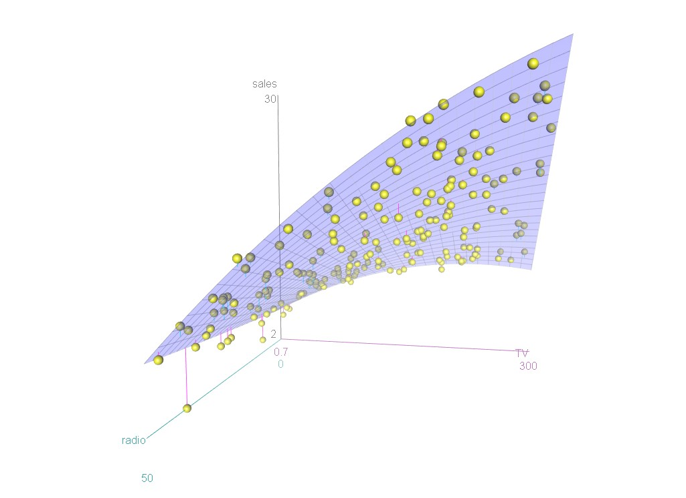
중요한 질문
예측변수 \(X_1,X_2,\ldots,X_p\) 가운데 적어도 하나가 반응변수를 예측하는 데 유용한가?
모든 예측변수가 \(Y\) 를 설명하는가, 아니면 일부 변수만 유용한가?
모형은 자료에 얼마나 잘 적합되는가?
주어진 예측변수 값에서 어떤 반응값을 예측해야 하며 그 예측은 얼마나 정확한가?
예측변수의 중요성: 회귀계수의 통계적 유의성
개별 계수의 유의성은 다음 \(t\) 통계량과 관련 \(p\) 값으로 평가한다.
\[
t=\frac{\hat\beta_j}{\widehat{SE}(\hat\beta_j)}.
\]
모든 계수 또는 특정 계수 집합의 공동유의성 은 다음 귀무가설을 검정한다.
\[
H_0:\beta_1=\cdots=\beta_p=0
\]
대
\[
H_1:\text{적어도 하나의 }\beta_j\neq0.
\]
\[
F=\frac{(TSS-RSS)/p}{RSS/(n-p-1)}.
\]
\(H_0\) 가 참이면 이 통계량은 자유도 \(p\) 와 \(n-p-1\) 인 \(F\) 분포를 따른다.
예제 5: 전체 및 부분 \(F\) 검정
광고 자료의 전체 \(F\) 검정에서 \(p\) 값이 매우 작다면 세 광고매체의 계수가 모두 0이라는 귀무가설을 기각한다.
전체 \(F\) 검정은 변수 중요성을 평가하는 첫 단계로 볼 수 있다.
귀무가설을 기각하지 못하면 예측변수가 \(Y\) 와 선형적으로 관련된다는 근거가 부족하며 모형은 \(Y=\beta_0+\epsilon\) 에 가까운 형태가 된다.
귀무가설을 기각하면 어떤 변수가 중요한지 추가로 살펴본다.
마지막 \(q\) 개 변수의 중요성을 검정한다고 하면 귀무가설은 다음과 같다.
\[
H_0:\beta_{p-q+1}=\beta_{p-q+2}=\cdots=\beta_p=0.
\]
축소모형의 잔차제곱합을 \(RSS_0\) , 전체모형의 잔차제곱합을 \(RSS\) 라고 하면 부분 \(F\) 통계량은 다음과 같다.
\[
F=\frac{(RSS_0-RSS)/q}{RSS/(n-p-1)}.
\]
중요한 변수의 선택
가장 직접적인 방법은 가능한 모든 변수 부분집합의 최소제곱모형을 적합하고, 훈련오차와 모형크기를 함께 고려하는 기준으로 최적 모형을 선택하는 최적부분집합 선택 이다.
가능한 모형은 \(2^p\) 개이므로 \(p\) 가 조금만 커져도 모든 모형을 조사하기 어렵다. 예를 들어 \(p=40\) 이면 가능한 모형이 1조 개를 넘는다.
따라서 실제로는 일부 후보모형만 효율적으로 탐색하는 자동화 방법을 사용한다.
변수선택 또는 모형선택 은 많은 후보변수 가운데 적절한 변수 부분집합을 고르는 문제이다.
대표적인 평가기준은 다음과 같다.
Mallows의 \(C_p\)
Akaike 정보기준(AIC)
Bayesian 정보기준(BIC)
수정결정계수
교차검증
전진선택
절편만 포함한 영모형에서 시작한다.
각 단일 예측변수 모형을 적합하고 RSS를 가장 많이 감소시키는 변수를 추가한다.
현재 모형에 변수를 하나씩 추가하면서 정지규칙을 만족할 때까지 반복한다.
후진제거
모든 변수를 포함한 모형에서 시작한다.
가장 유의하지 않은 변수 또는 평가기준을 가장 개선하는 제거 후보를 하나씩 삭제한다.
정지규칙을 만족할 때까지 반복한다.
단계적 선택
전진선택과 후진제거를 결합한다.
변수를 추가한 뒤 현재 모형에서 불필요해진 변수를 다시 제거할 수 있다.
참고 2
단계적 선택은 \(p\) 값뿐 아니라 AIC와 같은 정보기준을 사용하여 수행할 수 있다.
MASS::stepAIC()는 AIC 기반의 단계적 선택을 제공한다.
예제 6: AIC 단계적 변수선택
<- MASS:: Bostonoptions (digits = 3 , scipen = 3 )<- lm (medv ~ ., data = boston)summary (fit_lm)
#>
#> Call:
#> lm(formula = medv ~ ., data = boston)
#>
#> Residuals:
#> Min 1Q Median 3Q Max
#> -15.594 -2.730 -0.518 1.777 26.199
#>
#> Coefficients:
#> Estimate Std. Error t value Pr(>|t|)
#> (Intercept) 36.459488 5.103459 7.14 3.3e-12 ***
#> crim -0.108011 0.032865 -3.29 0.00109 **
#> zn 0.046420 0.013727 3.38 0.00078 ***
#> indus 0.020559 0.061496 0.33 0.73829
#> chas 2.686734 0.861580 3.12 0.00193 **
#> nox -17.766611 3.819744 -4.65 4.2e-06 ***
#> rm 3.809865 0.417925 9.12 < 2e-16 ***
#> age 0.000692 0.013210 0.05 0.95823
#> dis -1.475567 0.199455 -7.40 6.0e-13 ***
#> rad 0.306049 0.066346 4.61 5.1e-06 ***
#> tax -0.012335 0.003761 -3.28 0.00111 **
#> ptratio -0.952747 0.130827 -7.28 1.3e-12 ***
#> black 0.009312 0.002686 3.47 0.00057 ***
#> lstat -0.524758 0.050715 -10.35 < 2e-16 ***
#> ---
#> Signif. codes: 0 '***' 0.001 '**' 0.01 '*' 0.05 '.' 0.1 ' ' 1
#>
#> Residual standard error: 4.75 on 492 degrees of freedom
#> Multiple R-squared: 0.741, Adjusted R-squared: 0.734
#> F-statistic: 108 on 13 and 492 DF, p-value: <2e-16
<- MASS:: stepAIC (fit_lm, direction = "both" , trace = FALSE )summary (stw)
#>
#> Call:
#> lm(formula = medv ~ crim + zn + chas + nox + rm + dis + rad +
#> tax + ptratio + black + lstat, data = boston)
#>
#> Residuals:
#> Min 1Q Median 3Q Max
#> -15.598 -2.739 -0.505 1.727 26.237
#>
#> Coefficients:
#> Estimate Std. Error t value Pr(>|t|)
#> (Intercept) 36.34115 5.06749 7.17 2.7e-12 ***
#> crim -0.10841 0.03278 -3.31 0.00101 **
#> zn 0.04584 0.01352 3.39 0.00075 ***
#> chas 2.71872 0.85424 3.18 0.00155 **
#> nox -17.37602 3.53524 -4.92 1.2e-06 ***
#> rm 3.80158 0.40632 9.36 < 2e-16 ***
#> dis -1.49271 0.18573 -8.04 6.8e-15 ***
#> rad 0.29961 0.06340 4.73 3.0e-06 ***
#> tax -0.01178 0.00337 -3.49 0.00052 ***
#> ptratio -0.94652 0.12907 -7.33 9.2e-13 ***
#> black 0.00929 0.00267 3.47 0.00056 ***
#> lstat -0.52255 0.04742 -11.02 < 2e-16 ***
#> ---
#> Signif. codes: 0 '***' 0.001 '**' 0.01 '*' 0.05 '.' 0.1 ' ' 1
#>
#> Residual standard error: 4.74 on 494 degrees of freedom
#> Multiple R-squared: 0.741, Adjusted R-squared: 0.735
#> F-statistic: 128 on 11 and 494 DF, p-value: <2e-16
<- lm (log (medv) ~ ., data = boston)summary (fit_lm2)
#>
#> Call:
#> lm(formula = log(medv) ~ ., data = boston)
#>
#> Residuals:
#> Min 1Q Median 3Q Max
#> -0.7336 -0.0975 -0.0166 0.0963 0.8643
#>
#> Coefficients:
#> Estimate Std. Error t value Pr(>|t|)
#> (Intercept) 4.102042 0.204273 20.08 < 2e-16 ***
#> crim -0.010272 0.001315 -7.81 3.5e-14 ***
#> zn 0.001172 0.000549 2.13 0.03335 *
#> indus 0.002467 0.002461 1.00 0.31675
#> chas 0.100888 0.034486 2.93 0.00360 **
#> nox -0.778399 0.152890 -5.09 5.1e-07 ***
#> rm 0.090833 0.016728 5.43 8.9e-08 ***
#> age 0.000211 0.000529 0.40 0.69057
#> dis -0.049087 0.007983 -6.15 1.6e-09 ***
#> rad 0.014267 0.002656 5.37 1.2e-07 ***
#> tax -0.000626 0.000151 -4.16 3.8e-05 ***
#> ptratio -0.038271 0.005237 -7.31 1.1e-12 ***
#> black 0.000414 0.000108 3.85 0.00014 ***
#> lstat -0.029036 0.002030 -14.30 < 2e-16 ***
#> ---
#> Signif. codes: 0 '***' 0.001 '**' 0.01 '*' 0.05 '.' 0.1 ' ' 1
#>
#> Residual standard error: 0.19 on 492 degrees of freedom
#> Multiple R-squared: 0.79, Adjusted R-squared: 0.784
#> F-statistic: 142 on 13 and 492 DF, p-value: <2e-16
<- MASS:: stepAIC (fit_lm2, direction = "both" , trace = FALSE )summary (stw2)
#>
#> Call:
#> lm(formula = log(medv) ~ crim + zn + chas + nox + rm + dis +
#> rad + tax + ptratio + black + lstat, data = boston)
#>
#> Residuals:
#> Min 1Q Median 3Q Max
#> -0.7340 -0.0946 -0.0177 0.0978 0.8629
#>
#> Coefficients:
#> Estimate Std. Error t value Pr(>|t|)
#> (Intercept) 4.083682 0.203049 20.11 < 2e-16 ***
#> crim -0.010319 0.001313 -7.86 2.5e-14 ***
#> zn 0.001087 0.000542 2.01 0.04531 *
#> chas 0.105148 0.034228 3.07 0.00224 **
#> nox -0.721744 0.141653 -5.10 5.0e-07 ***
#> rm 0.090673 0.016281 5.57 4.2e-08 ***
#> dis -0.051706 0.007442 -6.95 1.2e-11 ***
#> rad 0.013446 0.002540 5.29 1.8e-07 ***
#> tax -0.000558 0.000135 -4.13 4.3e-05 ***
#> ptratio -0.037426 0.005172 -7.24 1.8e-12 ***
#> black 0.000413 0.000107 3.85 0.00013 ***
#> lstat -0.028604 0.001900 -15.05 < 2e-16 ***
#> ---
#> Signif. codes: 0 '***' 0.001 '**' 0.01 '*' 0.05 '.' 0.1 ' ' 1
#>
#> Residual standard error: 0.19 on 494 degrees of freedom
#> Multiple R-squared: 0.789, Adjusted R-squared: 0.784
#> F-statistic: 168 on 11 and 494 DF, p-value: <2e-16
선택 결과는 반응변수의 변환과 사용한 기준에 따라 달라질 수 있다.
모형 적합도
단순회귀와 마찬가지로 다중회귀에서도 \(R^2\) 과 RSE를 널리 사용한다.
변수를 추가하면 RSS는 감소하거나 그대로이므로 \(R^2\) 은 감소하지 않는다. 따라서 불필요한 변수를 추가한 모형도 \(R^2\) 만 보면 좋아 보일 수 있다.
수정결정계수(adjusted \(R^2\) ) 는 변수 수에 대한 벌점을 포함한다.
\[
\bar R^2
=1-\frac{RSS/(n-p-1)}{TSS/(n-1)}
=1-(1-R^2)\frac{n-1}{n-p-1}.
\]
불필요한 변수를 제거하면 일반 \(R^2\) 은 약간 감소할 수 있지만 수정 \(R^2\) 은 오히려 증가할 수 있다.
예측과 예측 불확실성
\[
\hat y=\hat\beta_0+\hat\beta_1x_1+\cdots+\hat\beta_px_p
\]
은 모집단 회귀함수
\[
f(X)=\beta_0+\beta_1X_1+\cdots+\beta_pX_p
\]
을 추정한다.
회귀계수 추정의 불확실성은 감소 가능한 오차와 관련된다.
주어진 \(x\) 에서 평균반응 \(E(Y\mid X=x)\) 에 대한 신뢰구간 은 대략 다음과 같다.
\[
\hat y\pm c_{\alpha/2}\widehat{SE}(\hat y).
\]
주어진 \(x\) 에서 앞으로 관찰될 개별 \(Y\) 에 대한 예측구간 은 다음과 같다.
\[
\hat y\pm c_{\alpha/2}\widehat{SE}_{pred}(Y).
\]
예측구간은 평균반응의 추정 불확실성뿐 아니라 개별 관측치의 감소 불가능한 오차까지 포함하므로 신뢰구간보다 넓다.
예제 7: 회귀선의 신뢰구간과 예측구간
\[
sales=\beta_0+\beta_1TV+\beta_{11}TV^2+\epsilon.
\]
그림은 회귀선의 95% 신뢰구간과 개별 예측의 95% 예측구간을 보여준다.
<- lm (sales ~ TV + I (TV^ 2 ), data = adv)<- seq (min (adv$ TV), max (adv$ TV), length.out = 200 )<- data.frame (TV = x)<- predict (fit_quad, newdata = xx, interval = "confidence" )<- predict (fit_quad, newdata = xx, interval = "prediction" )plot (sales ~ TV, data = adv, type = "n" ,xlab = "TV 광고비" , ylab = "매출" )polygon (c (x, rev (x)), c (pred_obs[, "upr" ], rev (pred_obs[, "lwr" ])),col = "light blue" , border = NA )polygon (c (x, rev (x)), c (pred_mean[, "upr" ], rev (pred_mean[, "lwr" ])),col = "light gray" , border = NA )lines (x, pred_mean[, "fit" ], col = "red" )points (sales ~ TV, data = adv, col = "steel blue" )legend ("topleft" , legend = c ("회귀선" , "평균반응 신뢰구간" , "개별값 예측구간" ),lty = c (1 , NA , NA ), pch = c (NA , 15 , 15 ),col = c ("red" , "light gray" , "light blue" ), bty = "n" )
추가 고려사항
범주형 예측변수
일부 예측변수는 연속적인 양적 변수가 아니라 유한한 범주값을 가지는 질적 변수이다.
이러한 변수를 범주형 변수 또는 요인변수라고 한다.
Credit 자료에는 7개의 양적 변수 외에도 성별, 학생 여부, 혼인상태, 인종과 같은 범주형 변수가 포함되어 있다.
library (ISLR)<- ISLR:: Creditpairs (credit[, c ("Balance" , "Age" , "Cards" , "Education" ,"Income" , "Limit" , "Rating" )],cex = 0.4 , col = "blue" )
범주형 정보는 지시변수(indicator variable) 또는 더미변수(dummy variable) 로 회귀모형에 포함한다.
\(q\) 개 범주를 가진 변수에서는 한 범주를 기준범주로 정하고 나머지 \(q-1\) 개 범주를 \(q-1\) 개의 더미변수로 나타낸다.
더미변수의 계수는 해당 범주와 기준범주 사이의 평균 차이를 의미한다.
R에서 변수를 factor로 지정하면 회귀모형이 필요한 더미변수를 자동으로 만든다.
다른 변수를 무시하고 여성과 남성의 카드잔액 차이를 분석한다고 하자. 여성 지시변수를 다음과 같이 정의할 수 있다.
\[
x_i=\begin{cases}
1,&i\text{번째 사람이 여성인 경우},\\
0,&i\text{번째 사람이 남성인 경우}.
\end{cases}
\]
\[
y_i=\beta_0+\beta_1x_i+\epsilon_i
=\begin{cases}
\beta_0+\beta_1+\epsilon_i,&\text{여성},\\
\beta_0+\epsilon_i,&\text{남성}.
\end{cases}
\]
따라서 \(\beta_0\) 는 남성의 평균잔액, \(\beta_1\) 은 여성과 남성의 평균잔액 차이이다.
$ Female <- ifelse (credit$ Gender == "Female" , 1 , 0 )<- lm (Balance ~ Female, data = credit)summary (fit_gender)
#>
#> Call:
#> lm(formula = Balance ~ Female, data = credit)
#>
#> Residuals:
#> Min 1Q Median 3Q Max
#> -529.5 -455.4 -60.2 334.7 1489.2
#>
#> Coefficients:
#> Estimate Std. Error t value Pr(>|t|)
#> (Intercept) 509.8 33.1 15.39 <2e-16 ***
#> Female 19.7 46.1 0.43 0.67
#> ---
#> Signif. codes: 0 '***' 0.001 '**' 0.01 '*' 0.05 '.' 0.1 ' ' 1
#>
#> Residual standard error: 460 on 398 degrees of freedom
#> Multiple R-squared: 0.000461, Adjusted R-squared: -0.00205
#> F-statistic: 0.184 on 1 and 398 DF, p-value: 0.669
세 개 이상의 범주가 있으면 더미변수를 추가한다. 예를 들어 인종변수에서 African American을 기준범주로 두고 Asian과 Caucasian 지시변수를 만들 수 있다.
\[
y_i=\beta_0+\beta_1x_{i1}+\beta_2x_{i2}+\epsilon_i
=\begin{cases}
\beta_0+\beta_1+\epsilon_i,&\text{Asian},\\
\beta_0+\beta_2+\epsilon_i,&\text{Caucasian},\\
\beta_0+\epsilon_i,&\text{African American}.
\end{cases}
\]
범주 수보다 더미변수의 수가 하나 적으며, 더미변수가 모두 0인 범주를 기준범주라고 한다.
$ Asian <- ifelse (credit$ Ethnicity == "Asian" , 1 , 0 )$ Caucasian <- ifelse (credit$ Ethnicity == "Caucasian" , 1 , 0 )<- lm (Balance ~ Asian + Caucasian, data = credit)summary (fit_ethnicity)
#>
#> Call:
#> lm(formula = Balance ~ Asian + Caucasian, data = credit)
#>
#> Residuals:
#> Min 1Q Median 3Q Max
#> -531.0 -457.1 -63.2 339.3 1480.5
#>
#> Coefficients:
#> Estimate Std. Error t value Pr(>|t|)
#> (Intercept) 531.0 46.3 11.46 <2e-16 ***
#> Asian -18.7 65.0 -0.29 0.77
#> Caucasian -12.5 56.7 -0.22 0.83
#> ---
#> Signif. codes: 0 '***' 0.001 '**' 0.01 '*' 0.05 '.' 0.1 ' ' 1
#>
#> Residual standard error: 461 on 397 degrees of freedom
#> Multiple R-squared: 0.000219, Adjusted R-squared: -0.00482
#> F-statistic: 0.0434 on 2 and 397 DF, p-value: 0.957
예제 8: 혼인상태를 포함한 임금모형
wooldridge 패키지의 wage1 자료를 이용하여 다음 모형을 적합한다.
\[
\begin{aligned}
\log(wage)=&\ \beta_0+\delta_1singlefemale+\delta_2marriedmale
+\delta_3marriedfemale\\
&+\beta_2educ+\beta_3tenure+\beta_4exper
+\beta_5tenure^2+\beta_6exper^2+\epsilon.
\end{aligned}
\]
<- wooldridge:: wage1$ mstatus <- with (wdf, factor (ifelse (female == 0 & married == 0 , "미혼 남성" ,ifelse (female == 1 & married == 0 , "미혼 여성" ,ifelse (female == 0 & married == 1 , "기혼 남성" , "기혼 여성" ))),levels = c ("미혼 남성" , "미혼 여성" , "기혼 남성" , "기혼 여성" )<- lm (log (wage) ~ mstatus + educ + tenure + exper + I (tenure^ 2 ) + I (exper^ 2 ), data = wdf)summary (fit_wage)
#>
#> Call:
#> lm(formula = log(wage) ~ mstatus + educ + tenure + exper + I(tenure^2) +
#> I(exper^2), data = wdf)
#>
#> Residuals:
#> Min 1Q Median 3Q Max
#> -1.8970 -0.2406 -0.0269 0.2314 1.0920
#>
#> Coefficients:
#> Estimate Std. Error t value Pr(>|t|)
#> (Intercept) 0.321378 0.100009 3.21 0.00139 **
#> mstatus미혼 여성 -0.110350 0.055742 -1.98 0.04827 *
#> mstatus기혼 남성 0.212676 0.055357 3.84 0.00014 ***
#> mstatus기혼 여성 -0.198268 0.057835 -3.43 0.00066 ***
#> educ 0.078910 0.006694 11.79 < 2e-16 ***
#> tenure 0.029088 0.006762 4.30 0.00002028 ***
#> exper 0.026801 0.005243 5.11 0.00000045 ***
#> I(tenure^2) -0.000533 0.000231 -2.31 0.02153 *
#> I(exper^2) -0.000535 0.000110 -4.85 0.00000166 ***
#> ---
#> Signif. codes: 0 '***' 0.001 '**' 0.01 '*' 0.05 '.' 0.1 ' ' 1
#>
#> Residual standard error: 0.393 on 517 degrees of freedom
#> Multiple R-squared: 0.461, Adjusted R-squared: 0.453
#> F-statistic: 55.2 on 8 and 517 DF, p-value: <2e-16
선형모형의 확장
선형모형의 가법성과 선형성 가정을 완화하는 대표적인 방법은 상호작용 과 비선형항 을 추가하는 것이다.
상호작용
앞선 광고 자료 분석에서는 한 광고매체의 효과가 다른 광고매체에 지출한 금액과 무관하다고 가정하였다.
가법 선형모형
\[
\widehat{sales}=\beta_0+\beta_1TV+\beta_2radio+\beta_3newspaper
\]
은 라디오 광고비와 무관하게 TV 광고비가 한 단위 증가할 때 매출이 항상 \(\beta_1\) 만큼 변한다고 가정한다. - 그러나 라디오 광고가 TV 광고의 효과를 높일 수 있다. 이 경우 라디오 광고비가 증가할수록 TV 광고비의 기울기도 증가해야 한다. - 고정된 광고예산을 TV와 라디오에 나누어 쓰는 것이 한 매체에 전부 사용하는 것보다 매출을 더 크게 증가시킬 수 있다. - 마케팅에서는 이를 시너지 효과, 통계학에서는 상호작용 효과라고 한다.
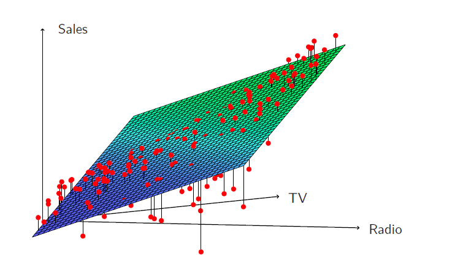
TV 또는 라디오 광고비가 매우 낮을 때와 두 매체에 예산을 함께 배분할 때 단순 가법모형의 예측오차 패턴이 달라질 수 있다.
상호작용모형은 다음과 같다.
\[
\begin{aligned}
sales
&=\beta_0+\beta_1TV+\beta_2radio+\beta_3(TV\times radio)+\epsilon\\
&=\beta_0+(\beta_1+\beta_3radio)TV+\beta_2radio+\epsilon.
\end{aligned}
\]
<- lm (sales ~ TV + radio + TV: radio, data = adv)summary (fit_interaction)
#>
#> Call:
#> lm(formula = sales ~ TV + radio + TV:radio, data = adv)
#>
#> Residuals:
#> Min 1Q Median 3Q Max
#> -6.337 -0.403 0.183 0.595 1.525
#>
#> Coefficients:
#> Estimate Std. Error t value Pr(>|t|)
#> (Intercept) 6.7502202 0.2478714 27.23 <2e-16 ***
#> TV 0.0191011 0.0015041 12.70 <2e-16 ***
#> radio 0.0288603 0.0089053 3.24 0.0014 **
#> TV:radio 0.0010865 0.0000524 20.73 <2e-16 ***
#> ---
#> Signif. codes: 0 '***' 0.001 '**' 0.01 '*' 0.05 '.' 0.1 ' ' 1
#>
#> Residual standard error: 0.944 on 196 degrees of freedom
#> Multiple R-squared: 0.968, Adjusted R-squared: 0.967
#> F-statistic: 1.96e+03 on 3 and 196 DF, p-value: <2e-16
상호작용항의 \(p\) 값이 매우 작다면 \(H_0:\beta_3=0\) 을 기각할 강한 근거가 된다.
상호작용모형의 \(R^2\) 이 가법모형보다 크게 증가하면 가법모형이 설명하지 못한 변동의 상당 부분을 상호작용이 설명한 것이다.
TV 광고비의 효과는 \(\beta_1+\beta_3radio\) , 라디오 광고비의 효과는 \(\beta_2+\beta_3TV\) 가 된다.
계층원칙
때로는 상호작용항이 매우 유의하지만 관련 주효과의 \(p\) 값은 유의하지 않을 수 있다.
계층원칙(hierarchy principle) 에 따르면 상호작용항을 포함할 때는 관련 주효과도 함께 포함하는 것이 일반적이다.
주효과 없이 상호작용만 포함하면 계수의 의미가 달라지고 해석이 어려워진다.
Credit 자료에서 소득과 학생 여부를 이용해 잔액을 예측한다고 하자.
상호작용이 없는 모형은 두 집단의 회귀선 기울기가 같다고 가정한다.
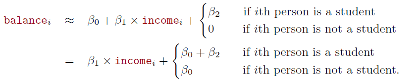
상호작용을 포함하면 학생과 비학생 집단의 기울기가 서로 다를 수 있다.
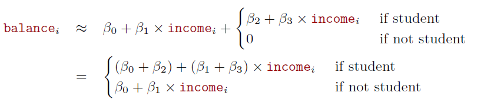
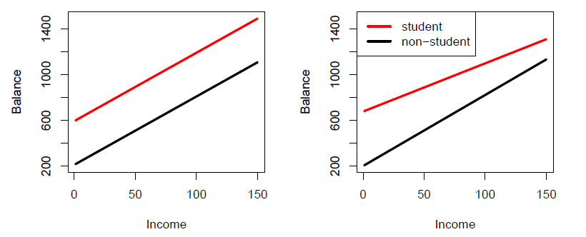
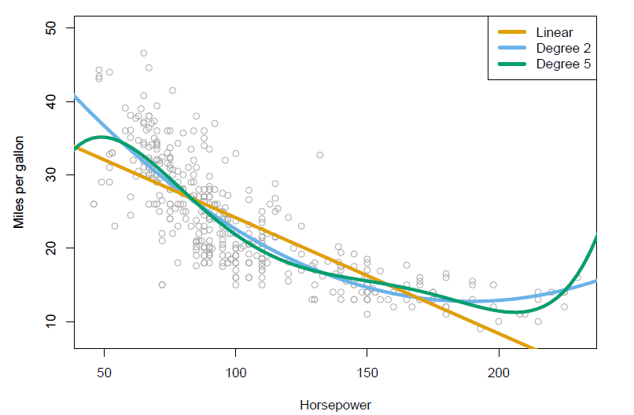
\[
mpg=\beta_0+\beta_1horsepower+\beta_2horsepower^2+\epsilon.
\]
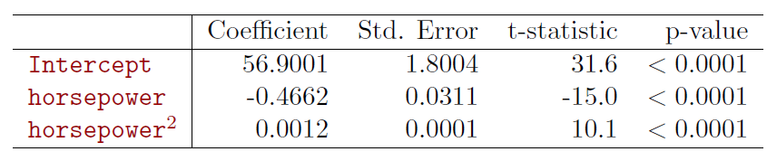
선형회귀에서 발생할 수 있는 문제
선형회귀를 적합할 때 다음과 같은 문제가 발생할 수 있다.
설명변수와 오차항의 상관
비선형성
오차항 사이의 상관
이분산성
이상치
고레버리지 관측치
다중공선성
잔차와 적합값 또는 설명변수의 산점도 등 그래프 진단은 이러한 문제를 확인하는 데 매우 유용하다.
비모수 회귀
모수적 회귀는 \(f(x)\) 의 함수 형태를 명시적으로 가정한다.
비모수적 접근은 \(f(x)\) 의 특정 함수형태를 미리 정하지 않고 자료에 기반하여 관계를 찾는다.
대표적인 방법이 KNN 분류기와 밀접하게 관련된 K-최근접 이웃 회귀 이다.
\(K\) 와 예측점 \(x_0\) 가 주어지면 \(x_0\) 에 가장 가까운 \(K\) 개의 훈련 관측치를 찾아 \(N_0\) 라고 한다.\(f(x_0)\) 는 \(N_0\) 에 포함된 반응값의 평균으로 추정한다.
\[
\hat f(x_0)=\frac{1}{K}\sum_{x_i\in N_0}y_i.
\]